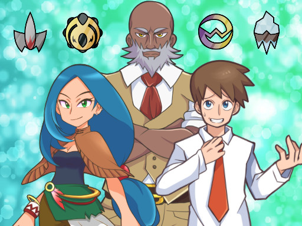
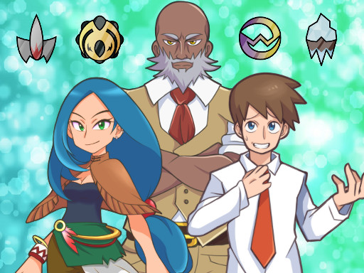

Juego creado por

En Pokémon Ópalo, el protagonista se embarca en una aventura única en la región de Céfira, un lugar rico en historia y cultura, pero marcado por un oscuro pasado. Tras una devastadora guerra en la que los Pokémon fueron utilizados como armas, la sociedad desarrolló un rechazo hacia el entrenamiento y las batallas Pokémon, considerándolas una forma de explotación. Ahora, los entrenadores son vistos con desdén y apenas quedan personas dispuestas a desafiar los gimnasios o aspirar a la Liga Pokémon, una tradición que ha quedado relegada al olvido. Sin embargo, el protagonista, un joven entrenador, decide desafiar esta percepción, enfrentándose a las pruebas de los líderes de gimnasio mientras explora los secretos de la región.
 
